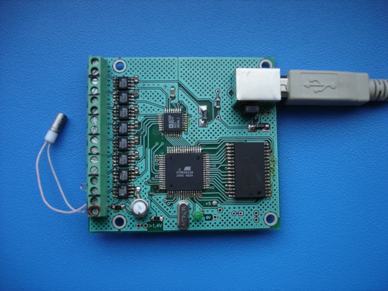
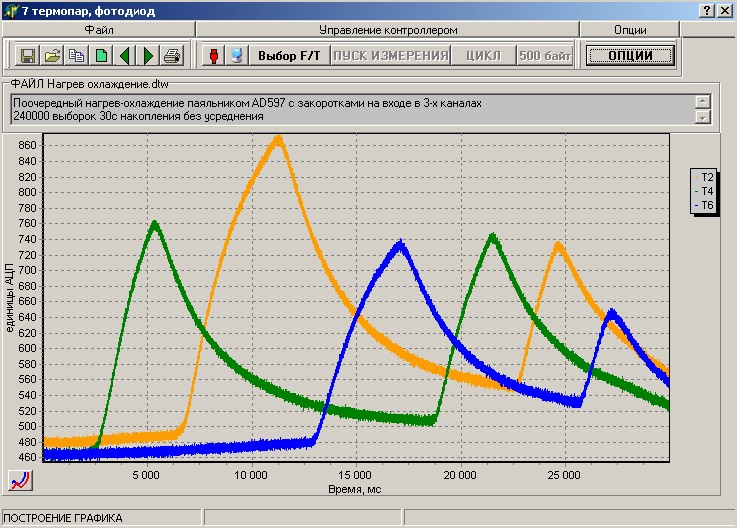

The board can be equipped with a USB-mini-B5
or USB-B connector, as in the photo.

View
of the application
displaying the signal recorded through 3 channels
during alternate heating-cooling
(for normal viewing click on the graph
with the mouse)
Programmatically controlled switching of measured temperature ranges 0...250°C or 0...500°C
Programmatically controlled sampling frequency/accumulation time.
Software selection of recorded channels.
Start of recording from a computer or by an external pulse.
The main differences are the presence of 512Kbytes memory, the possibility of autonomous operation when battery powered, which allows installing the device, for example, on a moving object where it is impossible to place a personal computer or laptop; the results can be read at the end of the recorded process by connecting the ADC to the computer's USB.
To convert the signal into digital data, a 12-bit ADC is used,
the maximum sampling frequency is 240kHz, at which 240000 samples are recorded.
At the minimum sampling frequency of 75 Hz, the recording time is 53 min.
Data is accumulated in the
512Kx8 memory; upon completion of the conversion, the data
is transmitted to a computer for storage,
conversion, and display. The transmission time for 240000
samples (480000 bytes) is no more than 7s.
The computer application allows viewing the graph, saving data, and viewing saved data
Power supply is via USB cable from the computer; power supply from an external +5V source is also possible, consumption is 150mA.
You can download the archive with the Application , this will allow you to view the data files provided as an example and located in the same archive.
For effective work with the application graphs, check out the video.
It is possible to add a mode for starting conversion when the signal level is exceeded, as well as when the signal gradient exceeds a software-defined threshold
It is possible to display signals in real time without prior recording to the controller memory, for example, with an interval from 0.25s